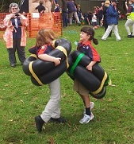

Joeys: Fun starts here
Joey Scouts are boys and girls between the ages of 6 and 8. They are the youngest members of the Scouting movement. The emphasis in this section is placed on fun and friendship in a non-competitive environment.
A group of Joey Scouts is called a "Mob". Joey mobs have no more than 20 children, led by trained adult leaders.
Joey Scouts are encouraged to express themselves creatively, through games, stories and craft activities. Building monsters and spaceships from recycled scrap items, growing plants from seedlings or singing songs together all develop a strong sense of belonging.
The Joey motto is "Help Other People" (HOP) which sets the direction upon which activities are based and reinforces the ideas of sharing with their friends, helping and caring about others.
Joey Scouts can receive participation badges by joining in with various group activities.
What do we do?
Throughout the year our Joeys participate in a range of activities. Our weekly meetings often have a theme such as Circus, Science, Spooky or Flight. Sometimes we run our whole meeting in the dark and other times we have a campfire, sing songs and roast marshmallows. Every year we have a Joey Region Camp where Joeys from other groups can come together and camp. There is also Joey Fun Day where Joeys can use a climbing wall, build something or play games. We have a Group Camp so that Kingsford Smith Joeys, Cubs and Scouts can come together and learn from each other. This year we even went flying in a light airplane at the Air Activities Centre.
When and Where?
We meet Monday nights 6:00pm - 7:00pm during school terms. For more information contact: George Murray, Group Leader, on 02 9667 1065.